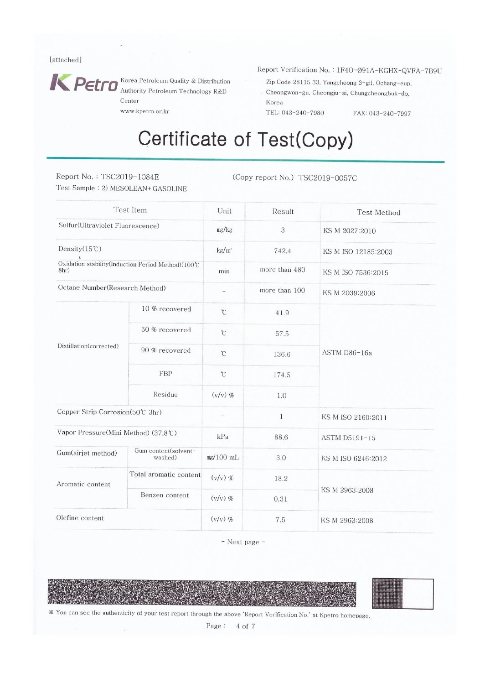
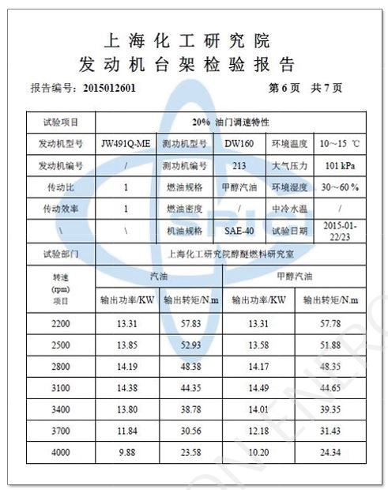
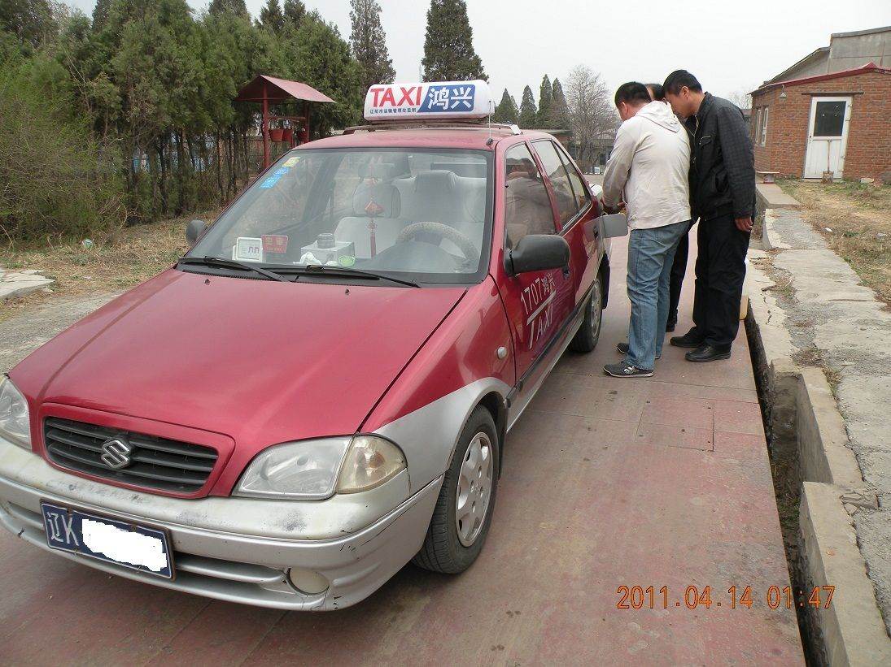

기술 · 검증
상분리, 부식, 출력 저하. 기존 알코올 혼합연료가 부딪힌 문제를 설계로 풀고 시험으로 확인했습니다.
해외 알코올 혼합가솔린에서 알려진 문제
미국·중국·인도·브라질 등에서 E10·E15·E20 같은 저농도 혼합연료를 쓰면서 보고된 일반적인 현상입니다. 특정 제품의 결함이 아니라, 알코올 혼합연료를 설계할 때 관리해야 하는 과제입니다.
| 현상 | 주요 원인 | 실사용에서 나타날 수 있는 영향 |
|---|---|---|
| 상분리 | 수분 유입과 알코올·가솔린 간 제한된 상용성(서로 섞이는 성질) | 연료가 층으로 나뉘어 엔진으로 들어가는 연료 조성이 불균일해질 수 있음 |
| 금속 부식 | 흡습한 알코올, 수분, 산화 부산물 | 탱크·배관·펌프·인젝터 부식 가능성 |
| 저온 시동성 저하 | 높은 기화열, 계절에 맞지 않는 증기압 | 겨울철 시동성 저하 |
| 연비 저하 | 휘발유보다 낮은 체적 발열량 | 같은 거리에 더 많은 연료 필요 |
| 고무·씰 열화 | 알코올의 용매성과 재질 팽윤 | 호스·씰의 물성 변화와 누유 가능성 |
| 유통·수송 제약 | 흡습성과 기존 파이프라인 재질 | 별도 운송·저장 관리 필요 |
미국 에너지부(DOE)는 E10을 모든 일반 가솔린 차량에, E15를 2001년식 이후 경량차에 쓸 수 있는 연료로 설명합니다. 출처: U.S. DOE, Ethanol Blends
기존 기술과 당사 기술의 차이
알코올을 조금 넣는 방식이 아니라, 연료를 다시 짜는 방식입니다.
일반 저함량 혼합연료의 수치는 업계에서 통용되는 수준을 기준으로 한 비교입니다. 당사 수치는 MESOLEAN 시험 결과입니다.
에솔린(ESOLEAN)의 3단계 설계
50% 고농도 알코올을 전제로, 세 단계가 서로 보완하도록 설계했습니다.
- 기본 배합알코올과 탄화수소 성분이 고르게 섞이도록 해, 알코올 함량이 높아도 균일한 연료 상태를 유지합니다.
- 끓는점 · 증기압 조정경질·중질 성분의 균형으로 계절별 증기압을 맞춰 저온 시동성과 고온 베이퍼록을 함께 관리합니다.
- 기능성 첨가제 체계한계 수분량 향상, 부식방지, 산화방지, 연소개선, 금속이온 안정 기능으로 남은 위험을 줄입니다.
시판 휘발유에 알코올을 나중에 더하는 방식(후첨)과 구별되는 점입니다.
외부 기관 시험 결과
아래 결과는 메솔린(MESOLEAN, 메탄올 계열) 기준 외부기관 자료입니다.
- 외부 기관 자료대학·공인기관이 시험·발급
- 사내 시험자체 시험으로 확인
- 게시 예정공인기관 결과 추가 예정
배기가스 저감률
한국부산대학교 기계기술연구소, 가솔린 대비, 시동 후 120초 누적
배기가스 농도 비교
중국 상하이 화공 연구원, 가솔린 → MESOLEAN
| 항목 | 가솔린 | MESOLEAN |
|---|---|---|
| HC | 220.23 ppm | 99.33 ppm |
| CO | 3.84 % | 0.07 % |
| NOx | 65.49 ppm | 21.71 ppm |
시험 항목별 결과
| 시험 항목 | 수행기관 | 결과 요약 | 자료 |
|---|---|---|---|
| 품질검사 | 한국석유관리원 석유기술연구소 (2019.03) | 옥탄가 99 이상 (시험성적서 발급) | 외부 기관 |
| 품질검사 | 중국석화 무순석유화공연구원 | 23개 국가표준 항목 합격 | 외부 기관 |
| 가속 · 출력 | 상하이 화공 연구원 / 한국부산대학교 | 가솔린과 동일 수준 | 외부 기관 |
| 금속 · 고무 부식 | 한국부산대학교 기계기술연구소 | 가솔린과 동등 수준 | 외부 기관 |
| 시동성능 | 한국부산대학교 기계기술연구소 | 엔진회전수·분사시간·공기과잉률 가솔린과 동일 수준 | 외부 기관 |
| 소음 · 진동 | 한국부산대학교 기계기술연구소 | 공회전 조건 가솔린과 동일 수준 | 외부 기관 |
| 실차 배기가스 | 중국 요양시 검사소 (GB18285) | CO 4.00 (기준 12.00 이하), HC+NOx 0.60 (기준 4.5 이하) 합격 | 외부 기관 |
| ESOLEAN | 당사 | 상분리·부식·옥탄가 자체 시험 확인. 공인기관 결과(상분리·부식·옥탄가·배출·연비) 추후 게시 | 사내 시험 게시 예정 |
시험성적서 · 검사서
외부 기관이 발급한 원본 문서입니다.

한국석유관리원 시험성적서 (표지)Report No. TSC2019-1084E · 2019.03 · 영문본 1/7쪽 
한국석유관리원 시험성적서 (MESOLEAN)옥탄가(RON) more than 100 · 영문본 2/7쪽 
한국석유관리원 시험성적서 (MESOLEAN + 가솔린)영문본 4/7쪽 
중국석화 무순석유화공연구원 검사결과시료 WJ0910-19 · 23개 항목 합격 
상하이 화공 연구원 엔진 대차 검사 (출력)보고서 2015012601 · 6/7쪽 
상하이 화공 연구원 엔진 대차 검사 (연료소모량)보고서 2015012601 · 5/7쪽 
랴오양시 실차 배기가스 검사서2011.06.30 · GB18285-2005 · 차량·개인정보 흐림 처리
현장 사용 사례: 중국 랴오양시 택시
2008~2012년 중국 랴오닝성 랴오양시에서 메탄올 계열 연료를 현지 택시에 사용한 기록입니다. 연료가 실험실을 넘어 실제 도로 운행에 쓰일 수 있음을 보여주는 참고 자료입니다.


환경성
연료 1몰이 연소할 때 생기는 CO₂ 몰수를 연소식으로 비교한 단순 비교입니다.
| 연료 | CO₂ (몰) |
|---|---|
| 이소옥탄 C₈H₁₈ (가솔린 대표성분) | 8 |
| 에탄올 | 2 |
| 메탄올 | 1 |
열량 기준·혼합비·전 과정(WTW) 평가는 포함하지 않습니다.
경제성
국제 가솔린 도매가(세전, USD/L) 대비 원가 경쟁력을 확보했습니다. 구체적 수치는 시장·환율 변동성이 있어 별도로 협의합니다.
에너지 안보 기여
원유 수입 의존도를 낮추고 에너지원 다변화에 기여합니다.
도입과 협력을 문의하세요
기술 라이선스, 합작 생산, 시험 자료 요청 등 어떤 문의든 메일로 보내 주시면 답변드립니다.
- 회사
- (주)비젼에너텍 · KOREA VISION ENERTECH CO.,LTD · 韩国飞展能源技术
- 이메일
- kang@mesolean.net
- 웹사이트
- WWW.ESOLEAN.COM